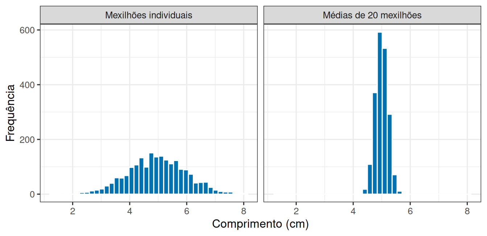
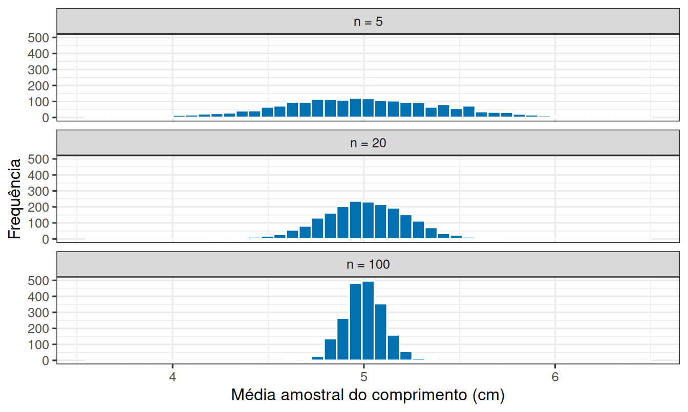
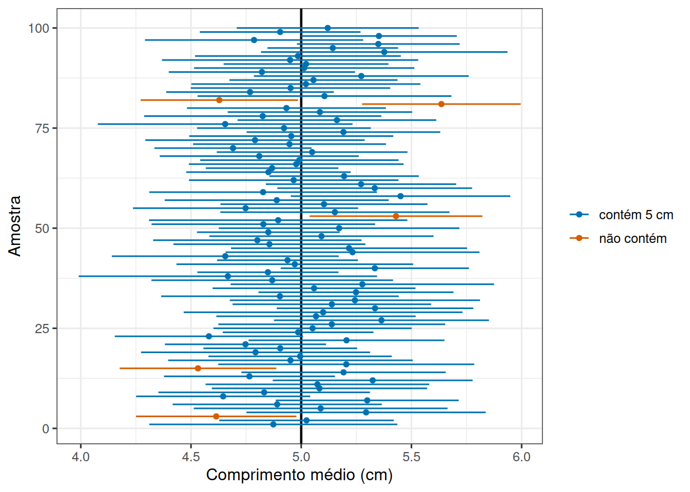

Leitura prévia 02
Por que a média muda de uma amostra para outra?
1 Duas equipes, duas respostas
Duas equipes recebem a mesma tarefa: estimar o comprimento médio dos mexilhões de um costão. Cada equipe coleta 20 mexilhões, mede um por um e calcula a média.
A equipe A encontra 4,9 cm. A equipe B encontra 5,3 cm.
Ninguém errou. Ninguém foi descuidado. Elas simplesmente pegaram mexilhões diferentes.
A pergunta desta leitura é o que fazer com esse fato: se a resposta muda a cada amostra, como usar uma única amostra para dizer alguma coisa sobre o costão inteiro?
2 E se repetíssemos o trabalho muitas vezes?
Na prática você coleta uma amostra só. Mas nada impede que imaginemos o que aconteceria se o trabalho fosse repetido, e o computador consegue fazer exatamente isso.
Suponha um costão onde os mexilhões têm comprimento médio de 5 cm e variam com desvio-padrão de 1 cm. Vamos sortear 20 mexilhões, anotar a média, e repetir isso 2000 vezes.
O gráfico da esquerda mostra o que você veria se medisse mexilhões um a um: nesta simulação, os comprimentos foram de 1,3 a 8,1 cm. O da direita mostra as médias de amostras de 20, que ficaram entre 4,2 e 5,8 cm.
São dois gráficos que respondem a perguntas diferentes, e confundi-los é um dos erros mais comuns em análise de dados.
3 E se a amostra for maior?
A largura da distribuição da direita depende de duas coisas: quanto os indivíduos variam e quantos indivíduos entram em cada amostra.

Com 5 mexilhões por amostra, as médias desta simulação foram de 3,6 a 6,5 cm: duas equipes poderiam chegar a conclusões bem diferentes. Com 100, todas as 2000 amostras ficaram entre 4,6 e 5,3 cm.
Ou seja: amostras maiores não mudam a população, mudam a nossa incerteza sobre ela.
4 Quanto uma média típica erra?
Em vez de descrever a figura com palavras, é útil ter um número que diga o quanto as médias se espalham. Esse número é o erro padrão da média:
\[EP = \frac{s}{\sqrt{n}}\]
onde \(s\) é o desvio-padrão dos valores da amostra e \(n\) é o número de unidades amostrais.
Repare no que a fórmula diz. O erro padrão cresce quando os indivíduos variam mais e cai quando a amostra aumenta, exatamente o que as figuras mostraram. E cai com a raiz de \(n\): para reduzir a incerteza pela metade é preciso quadruplicar a amostra.
5 De um número para um intervalo
Se a média de uma amostra quase nunca acerta o valor da população, informar só a média é informar pouco. É mais honesto informar uma faixa de valores compatíveis com o que foi observado.
É isso que faz um intervalo de confiança: em vez de “a média é 4,9 cm”, ele diz algo como “a média está entre 4,5 e 5,3 cm”. A largura do intervalo vem do erro padrão, e portanto encolhe quando a amostra cresce.
A interpretação exige cuidado. O intervalo não é uma promessa sobre uma amostra específica: é um procedimento que, aplicado repetidamente, acerta em uma proporção conhecida das vezes.

Nesta simulação, o número de intervalos que não contêm o valor real foi 5, de 100. Se repetíssemos isso indefinidamente, cerca de 95% dos intervalos conteriam a média da população. É por isso que o procedimento se chama “intervalo de 95% de confiança”.
O detalhe incômodo é que, com uma amostra só, você nunca sabe se está em um intervalo azul ou laranja. O que você sabe é a taxa de acerto do procedimento.